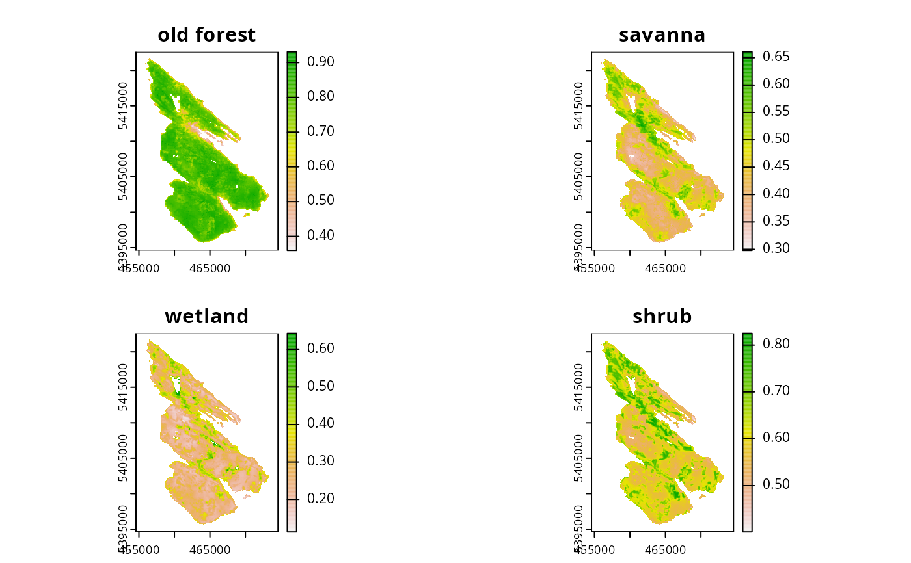

This data was obtained as part of an online Marxan-based planning tool created for the Coastal Douglas-fir Conservation Partnership (CDFCP; Schuster et al. 2017). For a worked example with this dataset, refer to the Salt Spring vignette. The scenario is intended to provide an example of how raster planning unit data can be used in the prioritizr package.
data(salt_features) salt_pu salt_features
Format
- salt_features
RasterStack-classobject- salt_pu
RasterLayer-classobject.
Details
The data set contains the following items:
salt_puPlanning unit data. A single band
RasterLayer-classobject where each one hectare pixel contains the monetary cost of acquiring the area (BC Land Assessment 2015).salt_featuresBiodiversity feature data. The probability of occurrence commensal of five key ecological communities found on Salt Spring island. Each layer in the
RasterStack-classobject represents a different community type. These classes are old forest (1), savanna (2), wetland (3), shrub (4), and a layer representing the inverse probability of occurrence of human commensal species (5). For a given layer, the values indicate the composite probability of encountering the suite of bird species most commonly associated with that community type.
References
BC Assessment (2015) Property Information Services. Available at http://www.bcassessment.ca [Date Accessed 2016/06/13].
Morrell N, Schuster R, Crombie M, and Arcese P (2017) A Prioritization Tool for the Conservation of Coastal Douglas-fir Forest and Savannah Habitats of the Georgia Basin. The Nature Trust of British Colombia, Coastal Douglas Fir Conservation Partnership, and the Department of Forest and Conservation Sciences, University of British Colombia. Available at http://peter-arcese-lab.sites.olt.ubc.ca/files/2016/09/CDFCP_tutorial_2017_05.pdf [Date Accessed 2017/10/09].
Examples
# load data data(salt_pu, salt_features) # plot data plot(salt_pu)plot(salt_features)